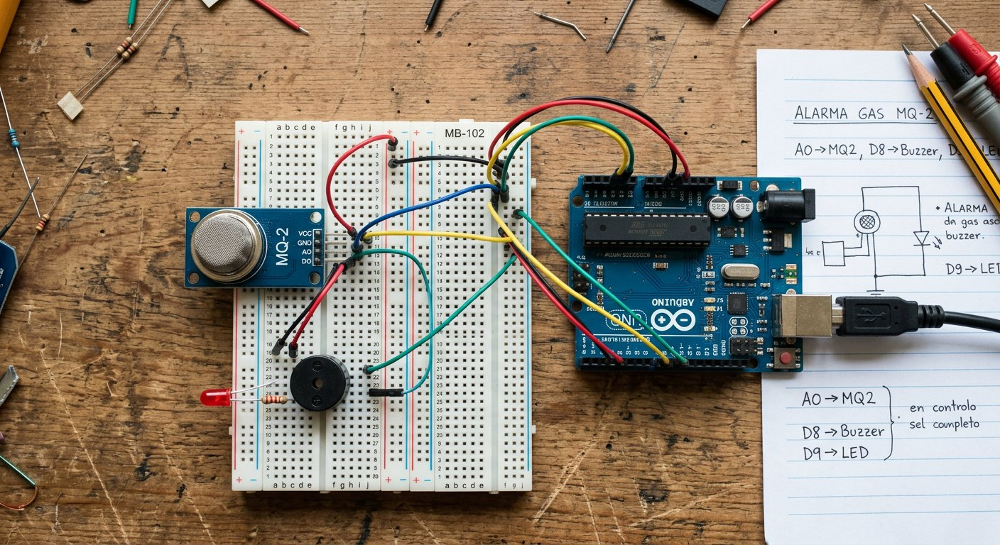

Qué cubre esta guía
Cómo funciona el MQ-2
El MQ-2 pertenece a la familia de sensores de semiconductor de óxido metálico. En su interior hay un elemento sensible que cambia su resistencia eléctrica cuando entra en contacto con gases combustibles: en aire limpio la resistencia es alta, y a medida que aumenta la concentración de gas, la resistencia disminuye. El módulo convierte ese cambio de resistencia en una variación de voltaje que el Arduino lee con analogRead().
El elemento sensible solo funciona correctamente a una temperatura elevada, por lo que el módulo incluye un calefactor interno que consume corriente y requiere un tiempo de estabilización antes de que las lecturas sean confiables.
Qué gases detecta y limitaciones
| Gas | Detecta | Nota |
|---|---|---|
| GLP (gas licuado) | Sí | Gas de uso doméstico en Chile |
| Propano | Sí | Componente del GLP |
| Metano | Sí | Gas natural |
| Hidrógeno | Sí | Menos común en el hogar |
| Humo | Sí | Responde a partículas de combustión |
Conexión: salida analógica y digital
El módulo MQ-2 tiene cuatro pines: VCC, GND, DO (digital) y AO (analógica). Se puede usar cualquiera de las dos salidas, o ambas:
Módulo MQ-2 Arduino Uno
----------- -----------
VCC --> 5V
GND --> GND
AO (analógica) --> A0
DO (digital) --> Pin digital 2 (opcional, con comparador)- Salida analógica (AO): entrega un valor proporcional a la concentración de gas; es la recomendada para calibrar un umbral en código con precisión.
- Salida digital (DO): un comparador interno con potenciómetro entrega alto o bajo cuando la concentración supera el umbral físico ajustado; útil para una alarma sin código complejo.
Precalentado del sensor
El MQ-2 no entrega lecturas confiables de inmediato. El calefactor interno necesita tiempo para estabilizar la temperatura del elemento sensible:
- Primer uso: se recomienda dejarlo energizado entre 24 y 48 horas antes de la primera calibración seria.
- Encendidos posteriores: espera entre 2 y 5 minutos para que la lectura se estabilice.
Calibrar el umbral de alarma
Con el sensor ya precalentado, la calibración consiste en registrar el valor en aire limpio y fijar el umbral con un margen de seguridad:
- Lee la salida AO en aire limpio con el monitor serie y anota el valor base (por ejemplo, 300).
- Fija el umbral de alarma por encima del valor base con un margen (por ejemplo,
UMBRAL = valorBase + 150). - Verifica que en aire limpio no se active la alarma y que al acercar una fuente de gas controlada sí lo haga.
Si usas la salida digital DO, gira el potenciómetro del módulo hasta que el LED de estado quede apagado en aire limpio y encienda con la fuente de prueba, siempre en un ambiente ventilado.
Código de alarma con buzzer y LED
const int PIN_SENSOR = A0; // salida analogica del MQ-2
const int PIN_BUZZER = 8; // buzzer activo
const int PIN_LED = 13; // LED de alarma
const int UMBRAL = 450; // ajusta con la calibracion (base + margen)
const int VECES_PARA_ALARMA = 3; // lecturas consecutivas sobre el umbral
int contador = 0;
void setup() {
pinMode(PIN_BUZZER, OUTPUT);
pinMode(PIN_LED, OUTPUT);
Serial.begin(9600);
}
void loop() {
int lectura = analogRead(PIN_SENSOR);
Serial.println(lectura);
if (lectura > UMBRAL) {
contador++;
} else {
contador = 0;
}
// Solo dispara si supera el umbral varias lecturas seguidas
if (contador >= VECES_PARA_ALARMA) {
digitalWrite(PIN_LED, HIGH);
digitalWrite(PIN_BUZZER, HIGH);
} else {
digitalWrite(PIN_LED, LOW);
digitalWrite(PIN_BUZZER, LOW);
}
delay(200);
}El requisito de varias lecturas consecutivas sobre el umbral (histéresis temporal) evita que un pico aislado dispare la alarma, una técnica sencilla pero muy efectiva para reducir falsos positivos.
Falsos positivos y cómo reducirlos
- Vapores cotidianos: alcohol, aerosoles, disolventes y humo de cocina elevan la lectura sin que haya fuga de gas. Calibra con margen y ubica el sensor lejos de estas fuentes.
- Deriva por temperatura: los cambios de temperatura y humedad alteran la lectura; evita montar el sensor cerca de fuentes de calor.
- Picos aislados: promedia lecturas y exige varias consecutivas sobre el umbral antes de disparar, como en el código anterior.
- Expectativa realista: este es un detector educativo; para seguridad real del hogar usa un detector de gas certificado.
Seguridad al probar con gas
La alternativa más segura para demostrar el funcionamiento en un taller es usar vapores de alcohol isopropílico en un hisopo acercado al sensor: elevan la lectura de forma visible sin el riesgo de una fuga de gas combustible.
Problemas comunes y soluciones
| Síntoma | Causa probable | Solución |
|---|---|---|
| Lecturas que cambian sin parar al encender | Falta de precalentado | Esperar 2–5 minutos antes de calibrar |
| La alarma nunca dispara | Umbral demasiado alto | Recalibrar con el valor base real del sensor |
| La alarma dispara sin gas | Umbral bajo o vapores ambientales | Subir margen y alejar de aerosoles y cocina |
| Valores siempre en 1023 | Sensor desconectado o dañado | Verificar cableado de AO y alimentación |
| El sensor se calienta mucho | Normal por el calefactor, o voltaje alto | Verificar que se alimenta a 5V |
Conclusión
El MQ-2 es una introducción fascinante a los sensores químicos: convierte la presencia de gases en una señal eléctrica que el Arduino puede leer y comparar contra un umbral. Con precalentado, calibración con margen y un filtro de lecturas consecutivas, tendrás un detector de fugas educativo confiable. Para completar un sistema de seguridad, combínalo con el sensor PIR de movimiento, que detecta presencia, y tendrás las dos piezas básicas de una alarma casera.
Preguntas frecuentes
¿Qué gases detecta el sensor MQ-2?
El MQ-2 es un sensor de amplio espectro para gases combustibles: detecta principalmente gas licuado de petróleo (GLP), propano, metano, hidrógeno y humo. No es selectivo, es decir, no distingue con precisión entre un gas y otro, sino que responde a la concentración general de gases combustibles en el aire. Por eso es adecuado como detector de fugas y humo de uso educativo y doméstico, pero no reemplaza a un detector certificado para entornos industriales o de alta exigencia.
¿Por qué el sensor MQ-2 necesita un tiempo de precalentado?
El elemento sensible del MQ-2 es una resistencia de óxido metálico que necesita calentarse para funcionar: el sensor incluye un calefactor interno que debe estabilizarse antes de que las lecturas sean confiables. El precalentado típico es de 24 a 48 horas para la primera puesta en marcha, y de unos minutos (2 a 5) para los encendidos posteriores. Si lees el sensor apenas lo enciendes, obtendrás valores que van cambiando a medida que se estabiliza, por lo que conviene esperar antes de calibrar o de fiarse de la alarma.
¿Cómo calibro el umbral de alarma del MQ-2?
La calibración consiste en registrar el valor que entrega el sensor en aire limpio y fijar el umbral de alarma por encima de ese valor de referencia, con un margen para evitar falsos positivos. El procedimiento: tras el precalentado, lee la salida analógica en aire limpio y anota el valor base (por ejemplo, 300); fija el umbral de alarma en ese valor más un margen (por ejemplo, base + 150). Si usas la salida digital DO, ajusta el potenciómetro del módulo hasta que el LED de estado quede apagado en aire limpio y encienda al acercar una fuente de gas de prueba, siempre en un lugar ventilado y con una fuente pequeña y controlada.
¿El MQ-2 puede dar falsas alarmas?
Sí, y es importante saberlo. El MQ-2 responde a gases combustibles en general, por lo que vapores de alcohol, aerosoles, disolventes, humo de cocina o incluso cambios bruscos de temperatura y humedad pueden elevar la lectura y disparar la alarma aunque no haya una fuga de gas. Para reducir falsos positivos conviene calibrar con un margen razonable, promediar varias lecturas, exigir que el valor supere el umbral durante un tiempo mínimo (por ejemplo, 2 segundos) antes de activar la alarma, y entender que se trata de un detector educativo y no de un equipo certificado.
¿Es seguro probar el sensor con gas real?
Probar el sensor con gas real requiere mucha precaución y, en general, no se recomienda usar gas de encendedor o fugas controladas en un taller escolar. Si decides hacer una prueba, debe ser en un lugar muy ventilado, con una fuente diminuta y controlada, lejos de llamas y chispas, y por un adulto que supervise. La alternativa más segura para demostrar el funcionamiento es usar vapores de alcohol isopropílico en un hisopo, que elevan la lectura sin el riesgo de una fuga de gas combustible. Nunca generes una fuga de gas a propósito en interiores.
Este artículo es contenido editorial independiente: no contiene ubicaciones patrocinadas ni enlaces de afiliado. Si en futuras actualizaciones se agregan enlaces a proveedores de componentes, serán identificados explícitamente. Este proyecto es educativo y no reemplaza un detector de gas certificado. El código y las conexiones son referenciales; verifica la normativa y seguridad vigentes. Si detectas un error en esta guía, por favor avísanos.
Sigue aprendiendo
Completa tu sistema de seguridad con el Sensor PIR de Movimiento para Proyectos de Seguridad, y repasa los fundamentos en la Guía Esencial de Sensores para Arduino.
Fuentes primarias y lecturas recomendadas
Referencias que sustentan los conceptos generales de la guía. Las curvas de sensibilidad exactas están en la hoja de datos del fabricante del MQ-2.
- Arduino Reference — analogRead()
- Arduino Reference — digitalWrite()
- All About Circuits — Referencia técnica de electrónica básica
Enlaces revisados: 13 de agosto de 2026.